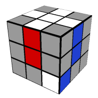

Note: This guide is based on the beginner's method from SolveTheCube.com. All rights and credits for the method and visuals go to them.
Don't Panic—Solving the Cube Is Possible!
You might've thought solving a Rubik's Cube is some genius-level trick… but it's actually a step-by-step process that anyone can learn. No guessing needed—just some simple moves, called algorithms, and a bit of practice.
We'll walk you through the beginner method, which focuses on solving the cube layer by layer.
Cube Notation (The Moves)
Before we start, here's how we describe cube moves:
- F - Front face
- B - Back face
- U - Upper face
- D - Down face
- L - Left face
- R - Right face
Each letter simply tells you to move that face clockwise by 90 degrees.
If a letter has ' (a prime) after it, it means a counter-clockwise turn. No ' = clockwise. For example:
- R = turn right face clockwise
- R' = turn right face counter-clockwise
Step 1: Solve the White Cross
First step: build a white cross on the white face by placing the four white edge pieces around the white center.
But it's not just about getting the white stickers on top — each edge also needs to match the center color on its side.

Tip: The center pieces don't move—they define the face color!
Step 2: Solve the White Corners
Now that you've made a white cross, it's time to finish the whole
white face by solving the four white corners.
Your goal is to place each white corner piece between
the correct center colors — so that the colors on the corner match the
sides around it.
✅ Like this:

üö´ Not like this:
What to Do:
Sometimes, a white corner will already be in the bottom layer — just
not in the right spot or orientation.
Here's how to fix that:
- Find a white corner piece in the top layer.
- Turn the top face so it's right above where it belongs (for example, the white-blue-red piece goes above the white-blue-red corner).
- Then, depending on how the white sticker is facing, use one of these quick moves:
If the white is on the side:
F D F'
If on the right face:
R' D' R
If on the bottom:

R' D R F D2 F'
Repeat this for each corner until your white face is fully solved — and the first layer wraps neatly around it!
Tip: If a corner is already in the bottom layer but
in the wrong spot or facing the wrong way, no problem.
Just
use any of the moves above to “pop it out”, then use the
right move to place it back correctly.
Step 3: Solve the Middle Layer Edges
Awesome ‚Äî the white face and first layer are done! üéâ
Now it's time to fill in the middle layer edges (the pieces between the centers, without any yellow on them).
Your goal here is to move edge pieces from the top layer into the middle layer — placing them between matching center pieces on each
The top face (usually yellow) should still be scrambled, and we'll now be using it to find and insert the correct edges into the middle.
Step-by-Step:
- Look at the top layer for edge pieces that don't have yellow on them.
- Once you find one, match its front color with the center piece on that face (by turning the top layer left or right).
- Then, check which side the other color needs to go — left or right. Use the right move below depending on the direction.
If the edge to go to the left:
U' L' U L U F U' F'
And to go to the right:
U R U' R' U' F' U F
Repeat this process until all four middle layer edges are in the correct positions!
Tip: If a middle edge is in the wrong spot or flipped, just use one of the moves above to pop it out — then place it again the right way. Just like you did with the corners!
Step 4: Make a Yellow Cross
Now that the first two layers are done, it's time to work on the yellow face (the top). The goal for this step is to create a yellow cross — like the white one you made earlier, but on top!
You don't need to worry about the corner pieces yet — just the yellow edge pieces.
What You Might See:
Depending on how your cube looks, you might see one of these:
- A single yellow dot in the center
- A small yellow backwards L shape
- A horizontal yellow line
- Or maybe you already have a full yellow cross (lucky you!)
The Move to Use:
No matter which shape you start with, you'll use the same short algorithm:
- F R U R' U' F'
Do this one or more times to turn the yellow dot, L, or line into a full cross.
What to Remember:
- If you see the L shape, hold it so it looks like a backwards L (facing the top-left corner).
- If you see the line, make sure it's horizontal, not vertical.
- Repeat the move until all four yellow edge pieces are facing up.
Tip: It might take a couple of tries — and that's normal! Just keep using the move above until the yellow cross appears.
Step 5: Solve the Last Layer Edges (Side Colors)
Now that you've got a yellow cross, the next goal is to line up the side colors of the yellow edge pieces — so they match the center pieces on each face.
The yellow stickers are already facing up, but they might be in the wrong places around the sides.
What to Look For:
Turn the top face to see if any yellow edge piece matches the center color underneath it.
- If one or more edge pieces match, great!
- If none of them match, don't worry — you'll still use the same move to fix them.
The Move to Use:
R U R' U R U2 R' U
This will cycle three edge pieces clockwise.
What to Do:
- Try turning the top layer (U) until at least one edge matches the face color below.
- Hold the cube so that solved edge is on the back face.
- Do the move above — and check again.
- You might need to repeat the move once or twice to get all four edge pieces lined up correctly.
Tip: If nothing matches at the start, just do the move from any angle — it should fix at least one piece, and then you can try again with that one at the back.
Step 6: Position the Yellow Corners
You're almost there — just one layer to go!
Now it's time to make sure all four yellow corner pieces are in the right spots on the top layer. That means each one should be between the correct center colors, even if the yellow sticker isn't facing up yet.

üëâ We're only placing the corners correctly for now. We'll rotate them in the next step.
What to Look For:
- Look at each yellow corner piece and check the three colors on it.
- See if it belongs between the matching center colors of the three surrounding faces.
You might already have one corner in the right place, or none at all — that's okay!
The Move to Use:
U R U' L' U R' U' L
This move cycles three corners around the top layer, without changing their orientation.
üîÅ What to Do:
- If one corner is already in the right place, hold the cube so that corner is in the top-right of the front face.
- Do the algorithm above.
- Check again — repeat as needed until all corners are in the correct positions.
Tip: If no corners are in the right spot at first, just do the move once from any angle. That usually gets one piece into place so you can continue from there.
Step 7: Rotate the Yellow Corners
This is it — the final step!
All your pieces should now be in the right spots. The only thing left is to twist the yellow corners so the yellow stickers face up, and the cube is fully solved.
What to Look For:
Each yellow corner is in the correct position, but some are turned the wrong way — yellow might be facing the side instead of up.
We'll fix each corner one at a time, using a simple move.
The Move to Use:

R' D' R D
This move rotates one corner clockwise (without moving anything else in the cube).
You might need to do it 2 or 4 times to fully turn the piece.
What to Do:
- Turn the whole cube so the corner you want to rotate is in the top-right of the front face.
- Do R' D' R D repeatedly until the yellow part is facing up.
- Only turn the top face (U) to move the next unsolved corner into the top-right — keep the rest of the cube in the same orientation.
- Repeat the move on each corner until all four are solved.
Tip: Don't panic if the rest of the cube looks scrambled while you're twisting a corner — it'll go back to normal when that corner is done!
Credit: This beginner's method is fully based on the excellent guide from SolveTheCube.com.
Be sure to visit their site for full step-by-step visuals and interactive explanations.